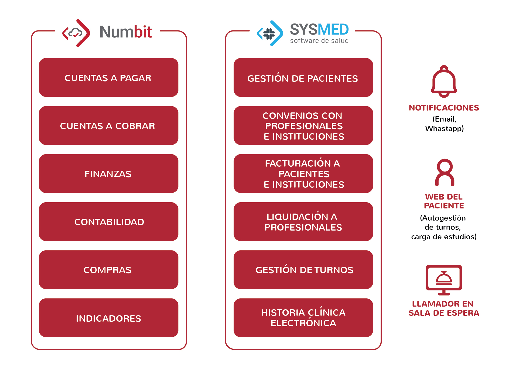

Prestadores de salud que optimizan
su gestión con Sysmed
Estas son algunas de las instituciones que administran
sus consultorios de forma ágil y segura con nuestra plataforma.


Los prestadores de salud necesitan gestionar de forma ágil la atención médica, la información clínica y los procesos administrativos, en un entorno cada vez más exigente. Sysmed Prestadores es nuestra solución ERP para digitalizar y optimizar sus procesos, mejorando la experiencia de pacientes y profesionales, desde una sola plataforma.
Sysmed Prestadores está diseñada para clínicas, consultorios y centros de salud ambulatorios que buscan integrar la gestión clínica, administrativa y financiera en una sola plataforma. Una solución que mejora la experiencia del paciente y agiliza la operación diaria.
Organiza horarios, sobreturnos y recordatorios desde un solo lugar, con paneles de control y acceso web 24/7.
Registra antecedentes médicos con atributos personalizables por especialidad, control de accesos y exportación segura en PDF.
Convierte tu Smart TV en un sistema dinámico de llamadas por nombre y consultorio, optimizando la atención al paciente.
Gestiona convenios con financiadores y profesionales, emite facturas electrónicas y gestiona cobros de copagos a pacientes con trazabilidad total.
Sysmed garantiza disponibilidad, monitoreo permanente, backups automáticos y asistencia técnica continua.
Sysmed Prestadores cuenta con funcionalidades totalmente integradas que se adaptan a las necesidades actuales de los prestadores de salud. Una plataforma modular y escalable, que se conecta fácilmente con tus procesos para optimizar tu gestión clínica, administrativa y financiera.

Estas son algunas de las instituciones que administran
sus consultorios de forma ágil y segura con nuestra plataforma.
SysMed Prestadores es un software ERP diseñado para la gestión de centros de atención
primaria, atención ambulatoria y consultorios, que permite digitalizar y ordenar los procesos
clínicos, administrativos y financieros en una única plataforma.
Está pensado para prestadores de salud que buscan mejorar la organización de la atención
médica, optimizar la gestión de pacientes y profesionales y agilizar la operatoria diaria, con
información centralizada y trazabilidad completa.
Una organización prestadora de salud necesita una solución específica porque la gestión
clínica, administrativa y financiera está profundamente integrada y requiere herramientas
diseñadas para ese nivel de complejidad.
SysMed Prestadores permite unificar la atención médica, la historia clínica, la gestión de
turnos y la coordinación de profesionales con los procesos administrativos y financieros,
como facturación, cobros y convenios, en un solo entorno digital.
Esto reduce la fragmentación de la información y permite un mayor control sobre la
actividad asistencial y económica.
Al estar pensado para centros de atención primaria, atención ambulatoria y consultorios, se
adapta a la dinámica real del trabajo médico diario.
SysMed Prestadores integra los principales procesos de gestión de clínicas, centros
ambulatorios y consultorios en una única plataforma.
Permite administrar turnos y agendas médicas, gestionar pacientes, registrar historia clínica
electrónica configurable por especialidad y coordinar la actividad de profesionales e
instituciones. También incluye la gestión de convenios, facturación a pacientes o
financiadores y liquidación de honorarios. Además, cuenta con versiones orientadas a
clínicas odontológicas y administración digital de odontogramas.
Además, integra el circuito administrativo y financiero en conexión con Numbit, el ERP de
Mastersoft, permitiendo un control unificado de la operación con trazabilidad de punta a
punta.
SysMed Prestadores incorpora funcionalidades clave para optimizar la atención en clínicas,
centros ambulatorios y consultorios.
Permite gestionar turnos de forma centralizada, con administración de horarios, sobreturnos
y recordatorios desde un panel web con acceso 24/7. Incluye historia clínica electrónica
configurable por especialidad (incluído odontograma en clínicas odontológicas), con control
de accesos y exportación segura, y suma un sistema de llamador inteligente en sala de
espera que agiliza la dinámica de atención.
También contempla la gestión de cobros y facturación, con emisión de comprobantes
electrónicos, convenios con financiadores y profesionales, y administración de copagos con
trazabilidad completa.
SysMed Prestadores mejora la operación diaria al reducir tareas manuales y ordenar los
circuitos de trabajo entre equipos clínicos, administrativos y financieros.
Esto permite agilizar la gestión interna, mejorar la coordinación entre áreas y aumentar el
control sobre la información, generando procesos más eficientes y una atención más fluida
para el paciente.
A su vez, cuenta con una infraestructura segura con monitoreo permanente, backups
automáticos y soporte continuo, que garantiza disponibilidad y estabilidad operativa.
Elegir SysMed Prestadores permite a clínicas, centros ambulatorios y consultorios contar
con una solución diseñada específicamente para la gestión asistencial y administrativa del
día a día médico.
Su enfoque integrado unifica la operación clínica y financiera, facilitando la organización de
turnos, la historia clínica, la coordinación de profesionales y la gestión de facturación y
cobros, con mayor eficiencia y control de la información.
Además, está respaldado por más de 30 años de experiencia de Mastersoft desarrollando
software para el sector salud, lo que asegura evolución constante y conocimiento profundo
de las necesidades reales de los prestadores.
Descubre cómo Sysmed Prestadores puede ayudarte a optimizar turnos, historias clínicas, facturación y mucho más, todo desde una única plataforma moderna y segura.